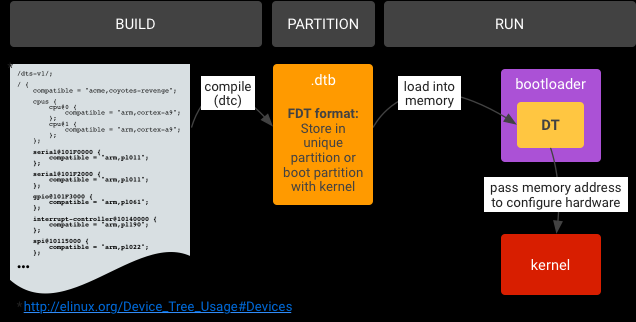

概述
高通A6650 healthd 守护进程分析。
Android 9 引入了从 health@1.0 HAL 升级的主要版本 android.hardware.health HAL 2.0。这一新 HAL 具有以下优势：
框架代码和供应商代码之间的区别更清楚。
弃用了不必要的 healthd 守护程序。
供应商对运行状况信息报告进行自定义的自由度更高。
更多设备运行状况信息（不仅包括电池信息）。
Android 11 包含 android.hardware.health HAL 2.1，这是一个从 health@2.0 HAL 升级的次要版本。这一新 HAL 具有以下优势：
更易于实现
更好地与现有 2.0 HAL API 保持一致
在关机模式充电代码中可以实现更好的 Treble 分离
更好地支持框架来指示设备的电池运行状况
Android弃用health@1.0 HIDL
Framework 将继续使用health@1.0直到按标准HAL弃用计划完全弃用为止 。当health@1.0被弃用（条目从 框架兼容性矩阵除去）， healthd和libbatterymonitor必须也系统中除去，以避免未知的healthd行为。由于health@1.0是一个可选的HAL，并且所有 healthd对health@1.0的依赖都受到NULL检查的保护，因此在弃用时不应该中断。
当Android删除旧代码路径（healthd，health@1.0）时，按弃用计划Health@1.0 HAL将被弃用。此外，Android还删除了以下内容：
Framework 中的healthd依赖
healthd
系统中 health@1.0的HAL定义库
Framework 兼容性矩阵中的health@1.0条目
移除healthd 对于运行Android 9的设备和升级到Android 9且在新vendor镜像中提供Health 2.0 HAL的设备，我们建议从系统镜像中删除healthd以节省磁盘空间并加快启动时间。
使用Android 9启动的设备必须提供2.0 HAL（并且不得提供1.0 HAL）。未使用Android 9启动但计划更新供应商映像为Target Framework Compatibility Matrix Version 3（在Android 9中发布）的设备必须删除现有的1.0 HAL实现并提供2.0 HAL。
AOSP包含多个帮助库，旨在帮助您实现2.0 HAL和从旧的1.0 HAL过渡。
术语
health@1.0：android.hardware.health@1.0 的缩写。指的是 Android 8.0 中发布的运行状况 HIDL 的 1.0 版 HAL。
health@2.0：android.hardware.health@2.0 的缩写。指的是 Android 9 中发布的运行状况 HIDL 的 2.0 版 HAL。
health@2.1：android.hardware.health@2.1 的缩写。指的是 Android 11 中发布的运行状况 HIDL 的 2.1 版 HAL。
charger：在关机模式充电过程中运行的可执行文件，用于显示手机充电动画。
recovery：在恢复模式下运行的可执行文件，必须检索电池信息。
healthd：在 Android 中运行的旧版守护进程，用于检索与运行状况相关的信息并将其提供给框架。
storaged：在 Android 中运行的守护进程，用于检索存储信息并将其提供给框架。
参考
架构

可以看到文件比较多，主要是通过BatteryMonitor.cpp中的BatteryMonitor::update(void)函数上报信息，其中，内核首先会更新数据到/sys/class/power_supply/battery节点下各个属性，这个在上一个小节有做解释，先来看一下整体的架构，后面再来深入到代码中去分析；具体图片（该图片来自互联网，因为被转载较多，已经不知道出处），具体的流程整理的很清楚，如下所示；

这幅图片再一次把整体的数据走向具体化，可以看到主要负责工作的是BatteryMonitor，主要分析一下该文件中的init和update就可以搞清楚大部分的问题。
涉及文件
编译文件
./vendor/lib64/hw/android.hardware.health@2.0-impl-2.1-qti.so
./vendor/lib64/libsystem_health_mon.so
./vendor/etc/vintf/manifest/android.hardware.health@2.1.xml
./vendor/etc/init/android.hardware.health@2.1-service.rc
./vendor/bin/hw/android.hardware.health@2.1-service
涉及文件：
system/core/healthd：
.
├── Android.bp
├── android.hardware.health@2.0-service.rc
├── Android.mk
├── animation.h
├── AnimationParser.cpp
├── AnimationParser.h
├── api
│ ├── charger_sysprop-current.txt
│ └── charger_sysprop-latest.txt
├── BatteryMonitor.cpp
├── charger.cpp
├── charger.sysprop
├── charger_test.cpp
├── charger_utils.cpp
├── charger_utils.h
├── healthd_draw.cpp
├── healthd_draw.h
├── healthd_mode_charger.cpp
├── healthd_mode_charger.h
├── healthd_mode_charger_nops.cpp
├── healthd_mode_charger_nops.h
├── healthd.rc
├── HealthServiceDefault.cpp
├── HealthServiceHealthd.cpp
├── images
│ ├── battery_fail.png
│ └── battery_scale.png
├── include
│ └── healthd
│ ├── BatteryMonitor.h
│ └── healthd.h
├── manifest_healthd.xml
├── OWNERS
└── tests
├── Android.mk
└── AnimationParser_test.cpp
hardware/interfaces/health：
├── 2.0
│ ├── Android.bp
│ ├── default
│ │ ├── Android.bp
│ │ ├── Health.cpp
│ │ ├── healthd_common_adapter.cpp
│ │ ├── HealthImplDefault.cpp
│ │ └── include
│ │ └── health2
│ │ └── Health.h
│ ├── IHealth.hal
│ ├── IHealthInfoCallback.hal
│ ├── README -> README.md
│ ├── README.md
│ ├── types.hal
│ ├── utils
│ │ ├── libhealthhalutils
│ │ │ ├── Android.bp
│ │ │ ├── HealthHalUtils.cpp
│ │ │ └── include
│ │ │ └── healthhalutils
│ │ │ └── HealthHalUtils.h
│ │ ├── libhealthservice
│ │ │ ├── Android.bp
│ │ │ ├── HealthServiceCommon.cpp
│ │ │ └── include
│ │ │ └── health2
│ │ │ └── service.h
│ │ ├── libhealthstoragedefault
│ │ │ ├── Android.bp
│ │ │ ├── include
│ │ │ │ └── StorageHealthDefault.h
│ │ │ └── StorageHealthDefault.cpp
│ │ └── README.md
│ └── vts
│ ├── functional
│ │ ├── Android.bp
│ │ └── VtsHalHealthV2_0TargetTest.cpp
│ └── OWNERS
├── 2.1
│ ├── Android.bp
│ ├── default
│ │ ├── Android.bp
│ │ ├── android.hardware.health@2.1-service.rc
│ │ ├── android.hardware.health@2.1.xml
│ │ ├── impl.cpp
│ │ └── service.cpp
│ ├── IHealth.hal
│ ├── IHealthInfoCallback.hal
│ ├── README.md
│ ├── types.hal
│ └── vts
│ ├── functional
│ │ ├── Android.bp
│ │ └── VtsHalHealthV2_1TargetTest.cpp
│ └── OWNERS
├── storage
│ └── 1.0
│ ├── Android.bp
│ ├── default
│ │ ├── Android.bp
│ │ ├── android.hardware.health.storage@1.0-service.rc
│ │ ├── manifest_android.hardware.health.storage@1.0.xml
│ │ ├── service.cpp
│ │ ├── Storage.cpp
│ │ └── Storage.h
│ ├── IGarbageCollectCallback.hal
│ ├── IStorage.hal
│ ├── types.hal
│ └── vts
│ └── functional
│ ├── Android.bp
│ ├── VtsHalHealthStorageV1_0TargetTest.config
│ └── VtsHalHealthStorageV1_0TargetTest.cpp
└── utils
├── libhealth2impl
│ ├── Android.bp
│ ├── BinderHealth.cpp
│ ├── HalHealthLoop.cpp
│ ├── Health.cpp
│ └── include
│ └── health2impl
│ ├── BinderHealth.h
│ ├── Callback.h
│ ├── HalHealthLoop.h
│ └── Health.h
└── libhealthloop
├── Android.bp
├── HealthLoop.cpp
├── include
│ └── health
│ ├── HealthLoop.h
│ └── utils.h
└── utils.cpp
system/core/healthd/Android.bphealth编译了一个可执行文件charger，该程序用于关机充电模式：
cc_binary {
name: "charger",
defaults: ["charger_defaults"],
recovery_available: true,
srcs: [
"charger.cpp",
"charger_utils.cpp",
],
target: {
recovery: {
// No UI and libsuspend for recovery charger.
cflags: [
"-DCHARGER_FORCE_NO_UI=1",
],
exclude_shared_libs: [
"libpng",
],
exclude_static_libs: [
"libhealthd_draw",
"libhealthd_charger",
"libminui",
"libsuspend",
],
}
}
}
HIDL
hardware/interfaces/health/2.0/README我们可以从以下得知2.0下是改为实施 2.1 HAL:
# Implement the 2.1 HAL instead!
It is strongly recommended that you implement the 2.1 HAL directly. See
`hardware/interfaces/health/2.1/README.md` for more details.
强烈建议您直接实现 2.1 HAL。 看`hardware/interfaces/health/2.1/README.md`了解更多详情。
查看package情况：
device/qcom/vendor-common/base.mk
1103:PRODUCT_PACKAGES += android.hardware.health@2.1-impl-qti
1104:PRODUCT_PACKAGES += android.hardware.health@2.1-service